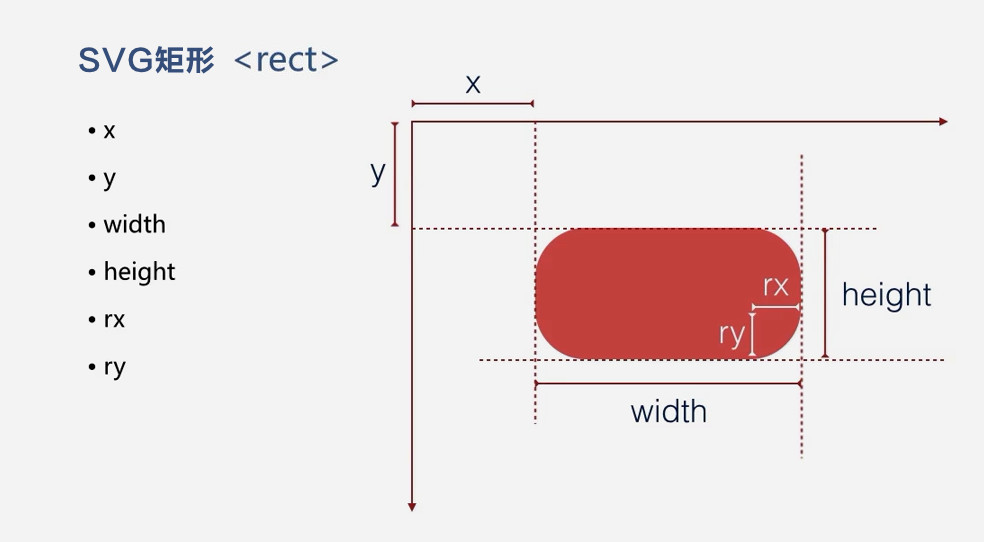
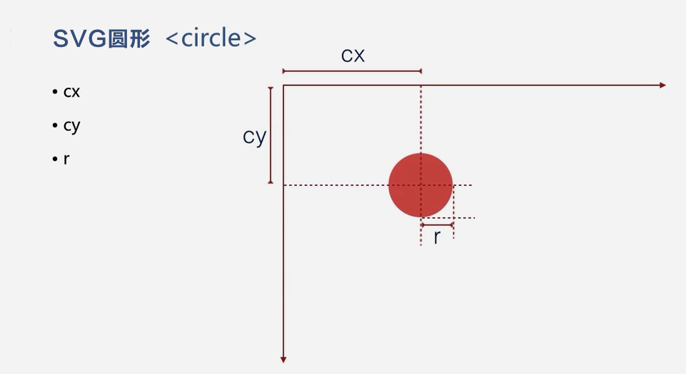
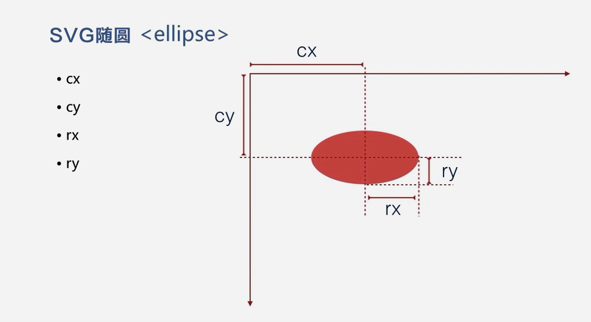
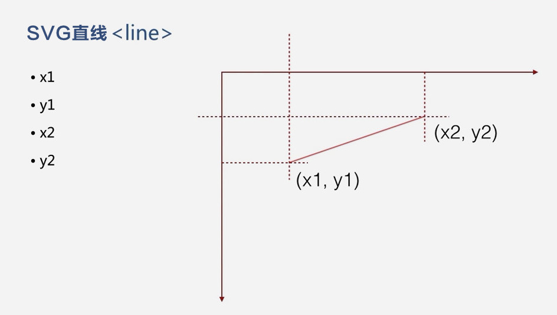
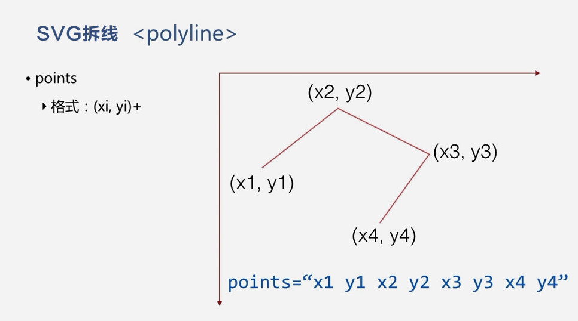
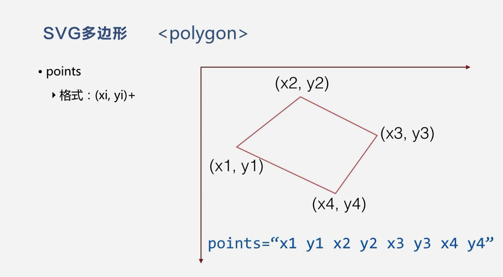
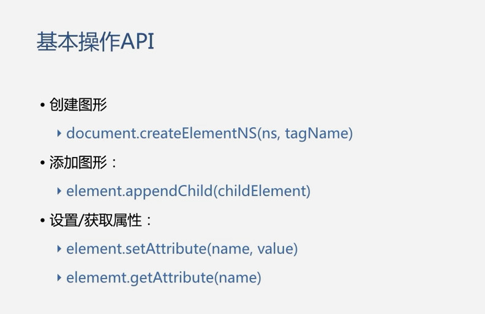
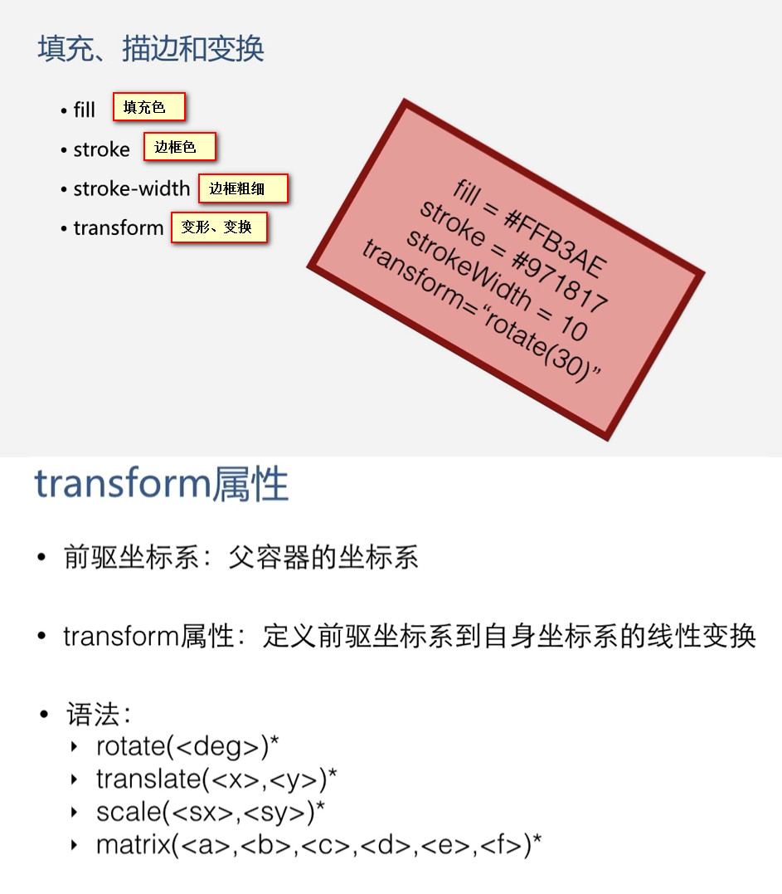

SVG的基本图形 和 属性
SVG 文档、
SVG 手册、
SVG 教程、
SVG 在线编辑器1、
SVG 在线编辑器2
SVG标签:
标签
- <svg width="" height="" style="" viewBox="0 0 0 0" ></svg>
属性
- 宽度：width
- 高度：height
- 样式：style
- 视窗：viewBox="x, y, width, height"
- 视窗显示方式：preserveAspectRatio="xMidYMid meet"
值1
- xMin viewport和viewBox左边对齐
- xMid viewport和viewBox x轴中心对齐
- xMax viewport和viewBox右边对齐
- YMin viewport和viewBox上边缘对齐。注意Y是大写。
- YMid viewport和viewBox y轴中心点对齐。注意Y是大写。
- YMax viewport和viewBox下边缘对齐。注意Y是大写。
值2
- meet 保持纵横比缩放viewBox适应viewport
- slice 保持纵横比同时比例小的方向放大填满viewport
- none 扭曲纵横比以充分适应viewport
SVG图形标签:
标签
- 圆形：circle
- 椭圆：ellipse
- 直线：line
- 折线：polyline
- 路径：path
- 矩形：rect
- 多边形：polygon
- 路径：path
- 蒙版：clipPath
属性
SVG边线边框属性：
- stroke="边框色"
- stroke-width="边框粗细"
- stroke-linecap="边框端点样式"
- stroke-dasharray="边框线型样式(虚线)"
SVG结构标签:
标签
- 图形组合：g
- 引用：use
- 图像模板 symbol
SVG文本标签:
标签
- 文本：text
- 文本路径：textPath
- 文本引用: tref（新版的svg中已经将这个标记删除，可以使用
- 文本包裹：tspan
SVG的基本图形【SVG 意为可缩放矢量图形（不失真）。SVG 使用 XML 格式定义图像。】







